If you are using Process Director v6.0.300 or below, you can view the user interface documentation for your version of the product on the User Interface (Legacy) topic.
If you are using Process Director v6.0.300 or below, you can view the user interface documentation for your version of the product on the User Interface (Legacy) topic.
If you are using Process Director v6.0.300 or below, you can view the user interface documentation for your version of the product on the User Interface (Legacy) topic.
Process Director’s user interface for v6.0.300 is very different from previous versions, and represents a fundamental change for administrators and process designers. At BP Logix, we've christened this new user interface "Navigator".
The Navigator UI for Process Director consists of a Home page that opens by default, as well as significant changes to the UI features and navigation scheme.
By default, a Home page is displayed that provides access to many features that enables you to begin building Process Director objects quickly. Unlike previous versions of Process Director, the Content List does not serve as the main Home page for administrators and designers. It is, instead, accessed via a menu item, as described below. Keep in mind that the Home page you see on your installation may be slightly different, and may not display all of the elements we discuss in this section of the topic.
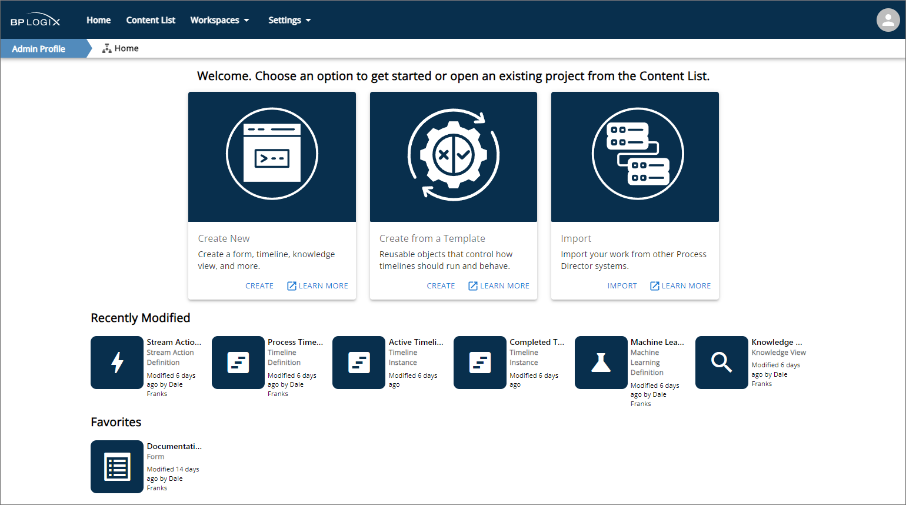
At the top of the Home page, large panels provide Create links to enable you to quickly:
Additional Learn More links in each panel will, when clicked, open the appropriate documentation page for creating objects, creating a new template-based application, or importing objects, in a new browser window.
Below the large panels, a series of icons in the Recently Modified section are displayed that link to the most recently-configured objects in the system. These links will immediately navigate you to these recent items and open them for configuration, without having to navigate through the Content List to find them.
Finally, a Favorites section displays a series of icons that link to objects that you've marked as a favorite in the Content List. This section will only appear if you have marked one or more Content List items as a favorite. Please see the Marking Objects as Favorites section below for more information.
The very first time you log into Process Director as an Administrator, you will be presented with the selection dialog that enables you to choose whether to view the Home page as the default, or to view the Content List, just as you did in previous versions of the product.
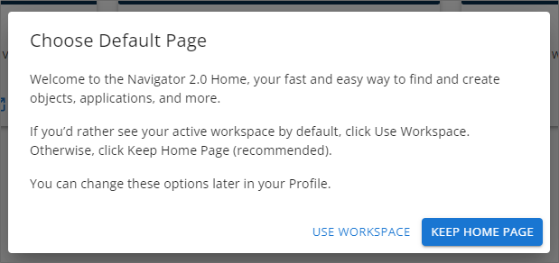
You can click the appropriate button to either Keep Home Page, which is the default, or Use Workspace, which is the legacy behavior. The choice you make here will be saved to your user Profile, which is accessible from the user icon in the top right corner of the screen.
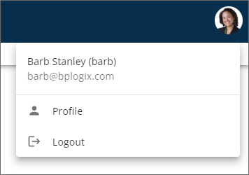
In the user profile, Administrators will see some Home page settings that they can configure.
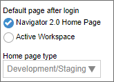
The Default page after login property will enable you to switch between the Home page and Workspace as the default display object when you log into the system. In addition, the Home page type property enables you to alter the visual appearance of the Home page, based on the type of system you're accessing. This setting controls the appearance of the large activity panels at the top of the Home page. The available options are:
The Home page type property is not accessible if the Default page after login property is set to Active Workspace.
Unlike the tabbed user interface for previous version of Process Director, v6.0.300 introduces a menu-based navigation scheme to provide quicker and easier access to the various features available in the product. The new menus are arrayed across the top of the page and are only visible to users with the appropriate permissions. To provide the fullest overview of the available menu items, we'll look at what a fully authorized system administrator sees.
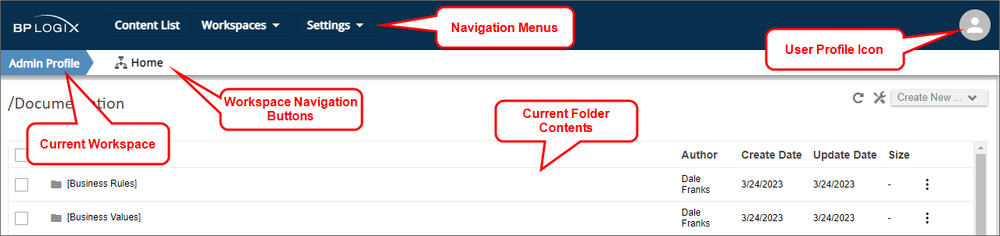
At the top of the page, a navigation bar enables you to access the functions available for your user role/permissions. The navigation menus on the left side of the page enable you to view the Content List, navigate to different Workspaces, or to access the IT Admin Settings for Process Director. On the right side of the navigation bar, the User Profile icon provides access to your user profile page and, if applicable, other functions.
Immediately below the navigation bar, a Workspace bar shows the name of the currently displayed Workspace on the left side of the page. In the example shown above, we're viewing the Admin Profile Workspace. Immediately to the right of the Workspace name, any navigation buttons used in the Workspace will be arrayed from left to right. In this example, we have a single navigation button, which, when clicked, will take you to the Workspace Home page.
 Workspace navigation bars that are configured to show built-in items such as IT Admin, Logout, etc., that are part of the main menu navigation, will no longer display those specific items in the Workspace navigation bar, since they now appear in the main product UI. This change enables you to use the available space for custom navigation items in the Workspace navigation bar.
Workspace navigation bars that are configured to show built-in items such as IT Admin, Logout, etc., that are part of the main menu navigation, will no longer display those specific items in the Workspace navigation bar, since they now appear in the main product UI. This change enables you to use the available space for custom navigation items in the Workspace navigation bar.
Below the Workspace bar, the contents of the current folder are displayed. Clicking on any item in the contents pane will navigate to that item by opening it.
Lets take a closer look at each item in this interface.
There are four possible navigation menus displayed in the navigation bar, Content List, Workspaces, Settings ,and User Profile. System Administrators will have access to all of these menus. Normal end users will see only the Workspaces menu, if they are assigned to more than one workspace, and the User Profile menu.
The Content List menu is a single, clickable menu item that opens the folder navigation tree for the full Content List.
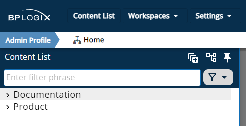
By default, the Content List is dismissable, which is to say that if you click outside of it, the tree will disappear. A Pin icon () will when clicked, make the Content List persistent, keep it permanently displayed. While the tree is dismissable, the folder contents pane of the "Content List" will be grayed out. Clicking on the grayed out area, or other area of the page, will dismiss the tree. But, once you click the Pin icon and make the tree persistent, the current contents pane will be accessible on the right side of the page, and the tree will be accessible on the left, similar to the UI convention that was used in previous versions of the product.
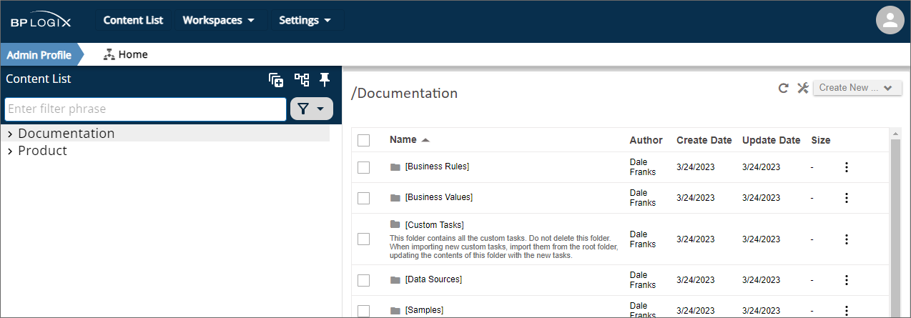
You can navigate through the content using either the folder tree pane on the left, or the contents pane on the right. As you do, both panes will update to display the current content you're viewing.
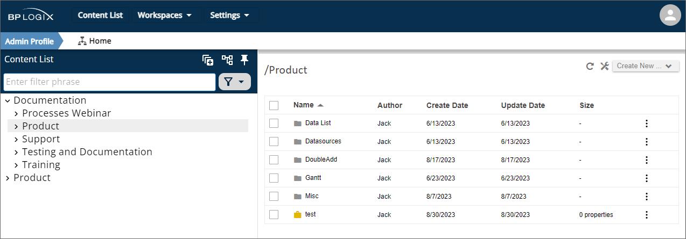
The treeview pane offers several features to make navigating through the Content List more convenient.
Two major changes were made to the operation of the Content List for Process Director v6.1.500 and higher:
The Expand All icon () will, when clicked, open the entire structure of the folder tree.
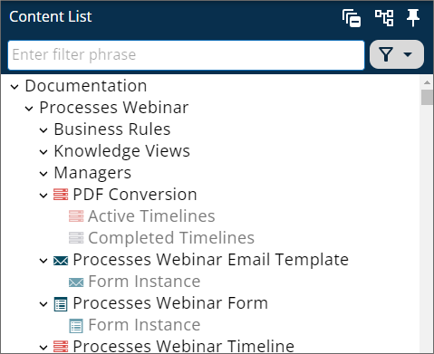
This same icon will, while the tree is expanded, automatically change to a Collapse All Icon (). Clicking the icon will collapse the tree view to its original state.
By default, system folders such as [Custom Tasks], [Business Values], [Data Sources], or any other folder whose name is placed in square brackets, will be hidden from view. The Show System Folders icon () will, when clicked, display these folders in the tree.
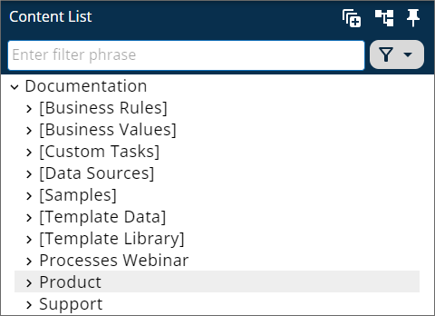
Again, this icon automatically changes to the Hide System Folders icon () while the system folders are displayed, and clicking it will hide the folders again.
A search bar that's labeled "Enter filter phrase" enables you to enter a search term. When you enter your desired term, any Content List items whose names match the search term you enter will be displayed in the tree.
For Process Director v6.1.200 and higher, the search bar will also accept all or part of the Object ID/GUID for any Content List object, in addition to the Name. Additionally, an X icon enables you to clear the search term, rather than having to manually erase it.
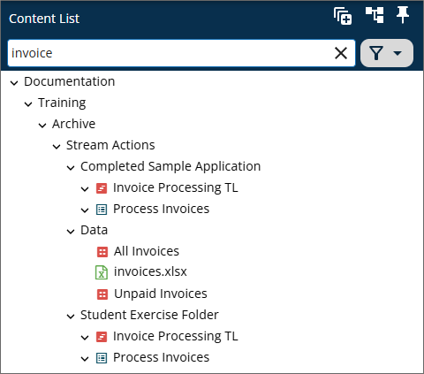
In the example above, using the search term "invoice" returns all Forms, Process Timelines, or other objects whose names contain the term "invoice". Clicking on any item in the tree will open it directly.
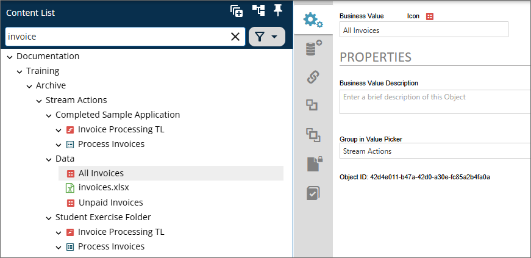
Once a search term has been entered, an X icon on the right side of the search bar will, when clicked, clear the search term.
For Process Director v6.1.500, the search feature was improved by adding pagination, enforcing a three-character limit to initiate searches, and prompting users to refine their search for large result sets.
To the right of the search bar, a Filter menu enables you to select objects of a specific type, so that only those object types are displayed in the tree.
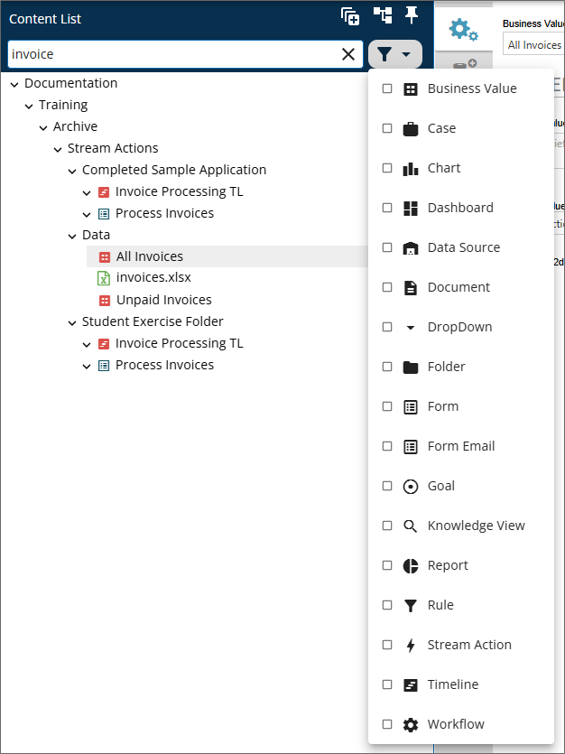
Selecting one or more items from the list of object types will filter the tree to show only objects of the selected types.
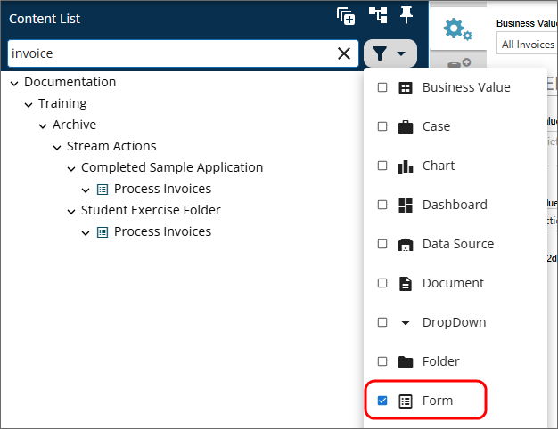
Notice that, in the example above, the filter works in conjunction with the search bar to show only Forms whose names contain the search term. You do not, however, have to use the search bar in conjunction with the filter. If no search term is entered, the filter will still change the tree display to show only object types that match the filter you select.
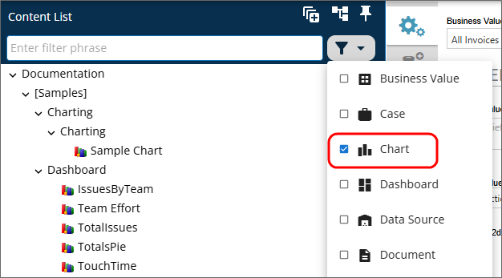
The Workspaces Menu provides you with access to all of the workspaces for which you are a member.
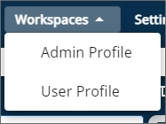
Clicking on any Workspaces menu item will immediately open that workspace to replace the Content List. Users who have access to only a single workspace will not be presented with this menu in the UI.
The Settings menu appears only for users with administrative access to the IT Admin or Metadata Administration areas of the Process Director installation.
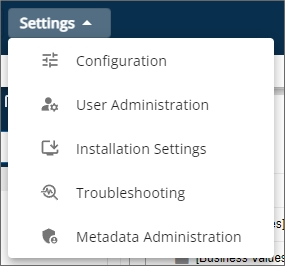
Each menu item provides access to a specific section of the administrative portion of the installation. For the specifics of what each section of the IT Admin area contains, please refer to IT Admin Area topic, or to the Meta Data Administration topic in the Administrator's Guide.
The User Profile menu appears at the upper right corner of the screen.
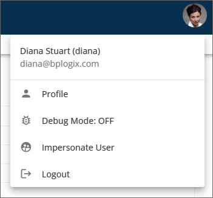
The User Profile menu is denoted by one of two visual appearances. For users that do not have a profile image uploaded to their user profile, the menu will display as a generic user icon, as shown above. User with valid profile images will see their profile Image displayed as a circular icon of the same size as the generic icon.
For most built-in users, the only two menu items displayed will be the Profile menu, which opens their User Profile page, and the Logout menu, which immediately logs them off of the system. SAML or Windows users on installations that use SAML/Windows Single Sign-On will not, by default, see the Logout menu item. A custom variable added in v6.1.0, UserInfoShowSignOut, will enable the Logout menu to appear, if desired.
Users with the permission to view the Content List in Debug Mode have a menu item labeled Debug Mode that includes an indicator to show whether Debug Mode has been turned on or Off. In the example shown above, Debug Mode is off.
Users who have been granted impersonation ability will also see an Impersonate User menu item, which will open the Impersonation page to enable them to begin impersonating a different user. Form more information on impersonation, please see the Impersonation topic of the Administrator's Guide.
When using the Content List, if you hover your mouse over an object, a small icon of a star outline will appear on the right side of the object.
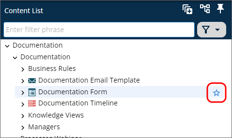
This icon serves as the Favorite icon for the object. Clicking this icon will mark the selected object as a favorite. Favorited items alter the user interface in two ways (though it may take a second or two for the changes to show after you click the icon). First, the icon display will change to permanently display a solid star in the Content List.
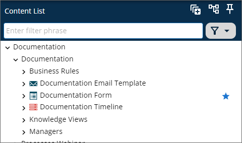
Second, the Home page will display the object as a favorite item in the Favorites section.
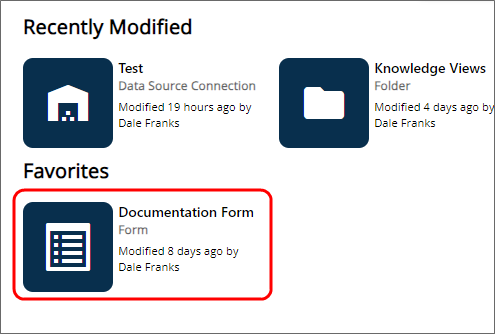
This feature enables you to mark any Content List object you'd like as a favorite item, so that you can open it directly from the Home page, without having to navigate through the Content List to find it. The UI changes that occur when an object is marked as a favorite will persist until you unmark the item as a favorite.
To unmark an item as a favorite, simply click on the Favorite icon again in the Content List. The icon will change from solid to an outline, and the favorited item will be removed from the Favorites section of the Home page.
For information about how different users see the interface, and how different UI elements are displayed or accessed, please see the Access Levels topic.
For Process Director v6.1.500 and higher, a new AI-driven chatbot feature, Approvia AI, can be licensed for use with Process Director. Please refer to the Approvia AI topic for more information.
Please refer to the Common UI Elements topic to learn about other common user interface conventions.